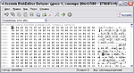
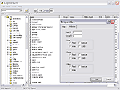
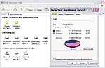
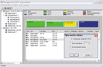

За дружбу между ОСами!
Игорь Дериев
Перефразируя известный тезис О. Бендера, "ОС
-- не роскошь, а платформа для выполнения
приложений". Тем не менее пользователи все чаще
задумываются о том, что система,
предустановленная на их ПК, вовсе не обязательно
является лучшей. Это, конечно, не означает, что
нужно сразу хвататься за "серьезную"
альтернативу вроде Linux или FreeBSD, но даже
выбор между Windows 9x и Windows 2000/XP порой
не столь очевиден. Одна из них дешевле и
понятнее, другая -- надежнее, но сложнее в
освоении и (не дай Бог!) в восстановлении.
Оптимальный вариант -- попробовать как можно
больше вариантов (даже Microsoft распространяет
пробные версии сроком действия 120 дней --
вполне достаточно, чтобы во всем разобраться) и
составить собственное мнение, на порядок
более ценное, чем любая информация из
масс-медиа. А для этого нужно научить различные
ОС не просто мирно уживаться на одном компьютере
(что само по себе не так уж сложно), но и по
возможности сотрудничать между
собой.
Конечно, слово "сотрудничество"
звучит чересчур общо и громко. В данном же
контексте под ним будет пониматься всего лишь
организация удобной загрузки любой из
установленных на ПК операционных систем и
совместного использования ими дисковых ресурсов.
Вроде бы относительно нехитрые задачи, однако с
ними связаны многочисленные нюансы и трюки,
познакомиться с которыми не только полезно, но и
просто интересно.
В качестве же
"подопытных кроликов" нам послужат Windows Me,
Windows XP Pro и ALT Linux (российский
дистрибутив, созданный "по мотивам" Mandrake
Linux), с некоторых пор прописанные на моих
компьютерах. К ним можно добавить и любую другую
ОС (с необходимыми поправками), хотя специально
это обсуждаться не будет -- из экономии времени
и печатной площади.
Прежде чем
приступить, собственно, к изложению основного
материала -- традиционные предупреждения и
напутствия: выполняйте резервное копирование
(хотя бы своих рабочих файлов), освойте
стандартные "восстановительные" процедуры для
каждой ОС, внимательно читайте всевозможные
Readme и FAQ.
В тесноте, да не в
обиде

|
Косвенный признак того, что копируется
загрузочная запись Linux-раздела, -- слово
LILO
| На первый
взгляд эта проблема может показаться надуманной.
Действительно, "серьезные" (т. е. практически
все, кроме Windows 9x) ОС имеют специальный
загрузчик, который умеет "подхватывать" по
крайней мере некоторые, установленные до них,
системы. Правда, Windows 2000/XP изначально
согласны дружить только с другими ОС Microsoft,
попросту не замечая конкурентов. Зато загрузчики
Linux -- LILO или набирающий популярность GRUB
-- могут запускать (после соответствующей
настройки) практически любые ОС. Таким образом,
если последовательно инсталлировать Windows Me,
Windows XP, Linux, то, скорее всего,
мультизагрузка будет настроена
автоматически.
Однако имеется один
подводный камень: по идее, LILO (GRUB) удобнее
установить в MBR, дабы загрузочное меню
появлялось автоматически при старте ПК, но
профессионалы все же рекомендуют (в
много-ОС-евых конфигурациях) размещать его в
загрузочной записи раздела Linux, а в этом
случае придется дополнительно применять
загрузочную дискету.

|
Не
идеальное решение, зато бесплатное и
функциональное
| Дело
в том, что MBR используется некоторыми
хитроумными программами, вроде Ontrack Disk
Manager, GoBack и пр., и конкуренция за него
может завершиться весьма плачевно. Естественно,
наличие заранее подготовленных "спасательных"
дискет обычно позволяет исправить ситуацию, но
зачем создавать проблемы самому себе? То же
самое, в общем-то, относится и к любым
мультизагрузчикам сторонних разработчиков,
таким, как System Commander или Acronis OS
Selector.
Методика, применяемая Windows
2000/XP, в этом плане более удачна (хотя у нее
имеются другие недостатки). Эта ОС оставляет без
изменения MBR, код которого, как и обычно,
передает управление загрузочной записи активного
раздела. Оттуда, в свою очередь, запускается
собственно мультизагрузчик. Да и вообще,
поскольку именно операционные системы Microsoft
применяются чаще всего, логичней использовать
весь их потенциал, тем более, что и в вопросах
загрузки альтернативных ОС он выходит далеко за
рамки штатных возможностей.
К сожалению,
в файле BOOT.INI (в нем описываются варианты
загрузки) нельзя просто указать номера диска и
раздела еще для одной ОС. Зато, как оказывается,
можно дать ссылку на файл, содержащий копию
загрузочной записи этого самого раздела. Суть
"трюка" заключается в том, что загрузочная
запись содержит некий код, который может быть
исполнен фактически из любого места. Кстати,
Windows 2000/XP также неявно использует эту
методику: при установке после Windows 9x (с
сохранением, естественно, прежней системы) ею
создается файл BOOTSECT.DOS длиной в 512 байт
(размер одного физического
сектора).
Итак, основная проблема --
сделать копию загрузочной записи нужного
раздела. Это можно осуществить несколькими
способами. Чаще всего рекомендуют
воспользоваться небольшой бесплатной утилитой BOOTPART, автоматически
копирующей в файл первый физический сектор
указанного тома (чтобы определить его номер,
достаточно запустить программу без параметров) и
добавляющей соответствующую запись в BOOT.INI.
Довольно просто и удобно, однако программа давно
не обновлялась и вероятно поэтому в некоторых
случаях (или конфигурациях) работает
неправильно.
Скопировать информацию из
загрузочного сектора можно и из среды Linux. Для
этого достаточно воспользоваться таким
"заклинанием":
dd if=/dev/hda6
of=/mnt/win_с/bootsect.lnx bs=512 count=1
|
где вместо
hda6 и win_с нужно подставить
соответственно обозначения Linux-раздела и
смонтированного Windows-тома из вашей конкретной
конфигурации.
Для тех же целей сгодится
любая программа, обеспечивающая
низкоуровневый доступ к содержимому жесткого
диска. Для среды Windows таковыми, к примеру,
являются Paragon Partition Manager или Acronis Disk Editor. В DOS
можно воспользоваться старым добрым DiskEdit из
пакета Norton Utilities (хотя неизвестно,
насколько корректно разные версии этой
утилиты работают с новыми BIOS и большими
жесткими дисками).
Дальше -- совсем
просто: если полученный файл назван
BOOTSECT.LNX, то в BOOT.INI достаточно добавить
строку вида
Кстати,
у этой методики найдутся и другие применения. К
примеру, можно вволю экспериментировать с
различными загрузчиками Linux, установив каждый
из них только однажды и создав копию
соответствующей загрузочной
записи.
Хлеба горбушку, и ту
пополам

|
И вот
вам результат: все дисковое пространство Linux
доступно под Windows
XP
| На первый
взгляд, делить дисковые ресурсы между
несколькими операционными системами (тем более,
если некоторые из них установлены только ради
ознакомления) не так уж обязательно. Тем не
менее нередко это вполне оправданно. Так,
20-гигабайтового жесткого диска, который еще год
назад я не представлял чем заполнить, сегодня
еле хватает для достойного содержания трех моих
рабочих ОС. Одна виртуальная память в сумме
"съедает" около гигабайта!
Вот еще один
пример из жизни: в Linux не удается настроить
dial-up-соединение, советы из печатной
документации не помогают, а электронная не
балует полнотой и за очередным HOWTO отсылает
(явно с издевкой) в Internet. Для новичка
ситуация фактически патовая -- в лучшем случае
он подключится к Internet из Windows, найдет
кипу информации о всевозможных конфигурационных
файлах и вынужден будет бесконечно переходить из
системы в систему для их проверки.
Список
негативных сценариев можно продолжить, но
гораздо важнее один позитивный момент:
сумев подружить различные ОС, даже не имея на то
насущной необходимости, вы приобретете крупицы
ценных знаний, которые, вполне возможно,
когда-нибудь сослужат вам добрую службу. Посему
-- к делу.
К сожалению, полного решения
проблемы общего пространства (для Windows -- это
файл, для Linux -- специальный раздел) подкачки
я не знаю. Частный случай Windows 9x и Windows
2000/XP прекрасно известен ("Компьютерное Обозрение", #
18--19, 2001), и возвращаться к нему еще раз
смысла нет. На самом деле эти ОС могут дружить
еще крепче (после настройки, например, с помощью
TweakUI), используя общие стандартные папки: My
Documents, Favorites и пр.
Еще для одной
пары -- Windows 2000/XP и Linux -- имеется
довольно оригинальное решение. Маленькая утилита
SwapFS, представляющая собой
службу-фильтр для Windows 2000/XP (в чем
сложность ее переноса в Windows 9х --
неизвестно), позволяет использовать из среды
этой ОС swap-раздел Linux. Судя по всему (не
хватило энтузиазма вникать в исходный код, хоть
он и доступен), при инициализации SwapFS
выполняется его форматирование в FAT, а при
деинициализации -- обратно в Linux Swap. Таким
образом получается некое подобие виртуального
диска, содержимое которого пропадает при
перезагрузке. Поэтому он лучше всего подходит
для размещения временных файлов, но сгодится и
для файла подкачки, если только вы не
перегружаете ПК по сто раз на
дню.
Устанавливать службу нужно вручную,
и хотя рекомендации вполне просты и занимают
лишь несколько строк, все же имеется подводный
камень. Дело в том, что Linux и Windows 2000/XP
по-разному нумеруют разделы. Например, на одном
из моих ПК /dev/hda7 соответствует
\Device\Harddisk0\Partition5. К счастью, видимо,
SwapFS выполняет простейшие проверки, поэтому
эксперименты завершились без потерь.

|
Под
Windows XP ext2-разделы можно монтировать
динамически
| Из
трех рассматриваемых в статье ОС самая
"ущербная", безусловно, Windows Me (как и все
семейство 9x), замкнутая в мирке FAT. Linux,
напротив, -- самая "всеядная". FAT давно для нее
не загадка, поддержка NTFS встроена в ядро,
начиная с версии 2.4. В современном состоянии
этот драйвер уже обеспечивает операции и чтения,
и записи. Windows XP, естественно, даже не
пытается работать с "чуждыми" файловыми
системами. Тем не менее все ОС можно уравнять в
правах (с некоторыми оговорками), если
воспользоваться ПО сторонних
разработчиков.
Существует довольно много
различных драйверов и утилит, обеспечивающих
доступ к файловой системе ext2, хотя не все они
одинаково удобны и надежны. Наиболее удачными и
универсальными показались два
решения.
Бесплатная утилита explore2fs
имеет explorer-подобный интерфейс и работает во
всеми современными версиями Windows. Программа
достаточно проста и во многих вопросах не
идеальна -- скажем, почему-то файл нельзя
открыть двойным щелчком, нужно обязательно
заглянуть в контекстное меню. С кириллическими
кодировками также не все в порядке, впрочем, это
-- беда всех аналогичных разработок. Но с
основными обязанностями -- просмотр и
копирование файлов (возможность записи также
имеется, но разработчики рекомендуют ею не
пользоваться) -- explore2fs справляется вполне
успешно.
Paragon Ext2FS Anywhere,
напротив, -- полноценный драйвер со
вспомогательной настроечной оболочкой. В Windows
9х она фактически не нужна, драйвер
активизируется автоматически, и для его
деактивации приходится полностью
деинсталлировать программу. Зато под Windows
2000/XP монтировать ext2-тома можно динамически,
хотя с обратной операцией также возникают
проблемы: обычно Ext2FS Anywhere считает, что
новоявленный диск кем-то используется (не
исключено, что это просто перестраховка
разработчиков) и предлагает перезагрузить ПК. В
остальном драйвер функционирует совершенно
прозрачно, и неискушенный пользователь даже не
догадается, что работает с непривычной файловой
системой. Дополнительные возможности программы
-- умение создавать/удалять, скрывать/показывать
и форматировать разделы всех типов из среды
Windows.
Имеется бесплатная версия, но в
ней слишком жесткие ограничения. Полная же
версия обойдется примерно в $13 (по-видимому,
любимая сумма для многих российских
разработчиков), поэтому прямой смысл приобрести
ее в составе одного из пакетов утилит. Вся
информация содержится на сайте
разработчиков.
Последнее, что нам
осталось, -- научить Windows 9x понимать NTFS.
Здесь также есть несколько возможных решений, но
наибольшего доверия заслуживает, пожалуй, одно.
Речь идет о NTFS for Windows 98 знаменитых
программистов из Sysinternals. В частности, эта
программа интересна тем, что в ней частично
используется код от самой Microsoft --
пользователь должен извлечь из дистрибутива
Windows NT/2000/XP несколько системных файлов,
которые необходимы для функционирования
программы. Может и не слишком элегантно, зато
(как любит ввернуть небезызвестный Хрюн) --
внушает.
В остальном программу
комментировать нет надобности -- абсолютно
прозрачный для системы драйвер, в бесплатной
версии обеспечивающий только чтение с
NTFS-томов (полная же требует оплаты из расчета
$49 на администратора, каждый из которых может
применять ее на любом количестве
машин).
Таким образом, подружить весьма
разнородные ОС не так уж сложно. Ну, быть может,
не подружить, а только добиться их мирного
сосуществования. Главное другое -- пользователи
могут самостоятельно создать идеальную
конфигурацию для эффективного их изучения. В чем
и желаю им успехов.
|